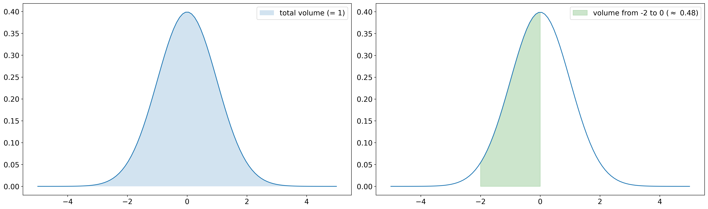

1.1. Probability Spaces¶
Definition
In order to model the outcome of a random experiment, we denote by \(\Omega\) the sample space of all possible outcomes, i.e.,
Accordingly, each element \(\omega \in \Omega\) is called an outcome. A subset \(A\) of \(\Omega\) of possible outcomes is called an event. If \(A\) contains only a single outcome \(\omega\), i.e., \(A=\{\omega\}\) for some \(\omega \in \Omega\), \(A\) is also called an elementary event.
If we model the rolling of an ordinary cubic dice, the sample space
is given by the 6 possible outcomes. The event \(A\) of rolling an even number is given by \(A = \{2, 4, 6\} \subset \Omega\) and the elementary event of rolling a six is given by \(A=\{6\}\).
Probability theory is based in the concept of probability distributions. In the following, we will distinguish between discrete und continuous distributions. It is also possible to unify these two kinds of distributions by means of measure theory, but this is outside the scope of this lecture (some remarks can be found in the section on continuous probability spaces). As the name suggests, the distribution determines/specifies how the outcomes of random experiments are distributed.
1.1.1. Discrete Probability Spaces¶
Definition
Let \(\Omega\) be a finite or countable sample space and denote by \(\mathcal{P}(\Omega) = \{A~|~A \subset \Omega\}\) the set of all subsets of \(\Omega\) (the so-called power set). Moreover, let \(p: \Omega \rightarrow [0, 1]\) be a map such that \(\sum_{\omega \in \Omega} p(\omega) = 1\). Then, the map \(P: \mathcal{P}(\Omega) \rightarrow [0,1]\) given by
is called a discrete probability measure or a discrete probability distribution. The triple \((\Omega, \mathcal{P}(\Omega), P)\) or briefly \((\Omega, P)\) is called a discrete probability space.
A probability measure \(P\) assigns to each possible event a probability between 0 (“impossible”) to 1 (“sure”).
\(P\) is completely characterized by the elementary probabilities (i.e., the probabilities of elementary events specified by \(p\)) in the case of discrete probability distributions (by definition).
The condition \(\sum_{\omega \in \Omega} p(\omega) = 1\) guarantees that \(P(\Omega) = 1\). In other words, it has to be sure that the outcome of a random experiment is indeed in \(\Omega\) and moreover, \(P(\Omega) > 1\) would make no sense in terms of probabilities.
Assumed that we are dealing with a fair dice as before, it is reasonable to define \(p(\omega):=\frac{1}{6}\) for each \(\omega=1, \dots,6\). Hence, each outcome of a dice roll is each likely. Consequently, the probability of rolling an even number is
as expected.
Corollary
A discrete probability measure has the following properties:
\(0 \le P(A) \le 1\) for each event \(A \in \mathcal{P}(\Omega)\),
\(P(\Omega) = 1\),
\(P\) is \(\sigma\)-additive, i.e., for pairwise disjoint events \(A_i\), \(i \in \mathbb{N}\), it holds
The statements in the preceding corollary are also called Kolmogorov axioms.
The term “pairwise disjoint” means that two arbitrary events do not have any common elements. For example, the events \(\{2, 4, 6\}\) and \(\{1, 3\}\) are disjoint, but the events \(\{2, 4, 6\}\) and \(\{2, 3\}\) are not, since the share the outcome \(2\).
The last statement also holds true for a finite number of sets \(A_i\), \(i=1,\dots,n\), by simply choosingchoosing \(A_i = \emptyset\) (empty set) for \(i > n\). If we consider only two disjoint sets \(A_1\) and \(A_2\), it follows that \(P(A_1 \cup A_2) = P(A_1) + P(A_2)\). This means that the probability that the event \(A_1\) or the event \(A_2\) occurs equals the sum of the probabilities, which is intuitive.
1.1.2. Continuous Probability Spaces¶
It turns out that the definition of probability spaces requires a different approach in the case of sample spaces that contain uncountably many outcomes. For example, the sample space could be given by the real numbers (\(\Omega = \mathbb{R}\)) or a higher dimensional space (e.g. \(\Omega = \mathbb{R}^d\), \(d >= 2\)). Indeed, the definition of (probability) measures on arbitrary sample spaces turns out to be a complex mathematical problem which is the foundation of measure theory. This theory introduces so-called \(\sigma\)-algebras which specify the measurable events, i.e., the events for which it is possible to assign a probability without generating any inconsistencies. An introduction can be found in the first chapter of “Wahrscheinlichkeitstheorie” by Achim Klenke. Measure theory is the foundation of very powerful results, since it enables mathematicians to define probability measures even on infinite dimensional sample spaces such as spaces of functions which lead to so-called stochastic processes. A special case are Gaussian processes which turn out to be very useful in the context of machine learning and are an essential part of this lecture.
Luckily, we do not necessarily need to consider measure theory in detail for our purposes. For the mentioned cases (\(\mathbb{\Omega} = [0, 1]\) or \(\Omega = \mathbb{R}^d\), \(d >= 1\)), we can use ordinary integrals in order to define probabilities at least on “nice” events:
Set \(C := \big\{ [a_1, b_1] \times [a_2, b_2] \times \cdots \times [a_d, b_d]~\big|~-\infty \le a_i \le b_i \le \infty, ~i = 1, \dots, d\big\}\). An event \(A \in C\) is simply a box.
For d=1 we obtain an interval \(A = [a_1, b_1]\).
For d=2 we get a rectangle \(A = [a_1, b_1] \times [a_2, b_2] \subset \mathbb{R}^2\).
In measury theory, \(C\) is a so-called generating system of the Borel \(\sigma\)-algebra \(\mathcal{B}(\mathbb{R}^d)\).
The Borel \(\sigma\)-algebra is the smallest collection of events with sufficiently nice properties which contains alle these boxes.
\(\mathcal{B}(\mathbb{R}^d)\) is fairly abstract. Just rembember that
\(\mathcal{B}(\mathbb{R}^d)\) contains all events we would like / are able to assign a probability to,
there are subsets of \(\mathbb{R}^d\) which are not in \(\mathcal{B}(\mathbb{R}^d)\), but we do not care, since they are not important.
Definition
Let \(\Omega = \mathbb{R}^d\), \(d \ge 1\), be the sample space and \(f: \mathbb{R}^d \rightarrow \mathbb{R}\) be an integrable non-negative function such that
Then, the map \(P: C \rightarrow [0, 1]\) defined by
extends uniquely to \(\mathcal{B}(\Omega)\) (not part of the lecture) and this extension is called a continuous probability measure or a continuous probability distribution. \(f\) is called the probability density function (pdf) of \(P\) or briefly probabilty density or simply density. The triple \((\Omega, \mathcal{B}(\Omega), P)\) or briefly \((\Omega, P)\) is called a continuous probability space.
It holds
Therefore, \(f: \mathbb{R} \rightarrow \mathbb{R}\) defined by \(f(x):= \frac{1}{\sqrt{2 \pi}}~\exp\big(-\frac{1}{2} x^2\big)\) for \(x \in \mathbb{R}\) defines a continuous probability distribution with density \(f\). This distribution is the standard normal distribution (also denoted by \(\mathcal{N}(0, 1)\)).
As in the case of discrete probability spaces, a continuous probability measure fulfills the Kolmogorov axioms.
In order to unify the notation of discrete and continuous probability spaces, we denote a general probability space by \((\Omega, \mathcal{F}, P)\), where \(\mathcal{F}\) denotes a \(\sigma\)-algebra (in our case either \(\mathcal{P}(\Omega)\) or \(\mathcal{B}(\Omega)\)).
Keep in mind that \(f\) is simply a non-negative function whose volume under the graph is exactly one and the probability of some event \(A\) is the volume under the graph of \(f\) restricted to \(A\). In the plot below, \(P([-2, 0]) \approx 0.48\) is illustrated for a standard normal distribution. In other words, the probability to observe an outcome between -2 and 0 in a standard normally distributed experiment is approximately 48%.

In general, regions where the probability density functions takes large values are more likely. Thus, a standard normally distributed experiment will likely have outcomes near \(0\), whereas outcomes far away from \(0\) are very unlikely.
1.1.3. Conditional Probability¶
The concept of conditional probability answers questions about probabilities of events \(A\) if we already know that some other event \(B\) happens for sure.
Definition
Let \((\Omega, \mathcal{F}, P)\) be a probability space and \(A, B \in \mathcal{F}\) such that \(P(B) > 0\). Then the conditional probability of \(A\) given \(B\) is defined as
\(P(A~|~B)\) is exactly the probability that \(A\) and \(B\) happen simultaneously normalized by the probability of \(B\).
By the third Kolmogorov axiom, the following theorem can be concluded:
Theorem
Let \((\Omega, \mathcal{F}, P)\) be a probability space and \(B_i \in \mathcal{F}\), \(i=1,2,\dots\), a partition of \(\Omega\). Then
The theorem is also called law of total probability and it states that the probability of an event \(A\) can be considered/computed as a weighted average of conditional probabilities.